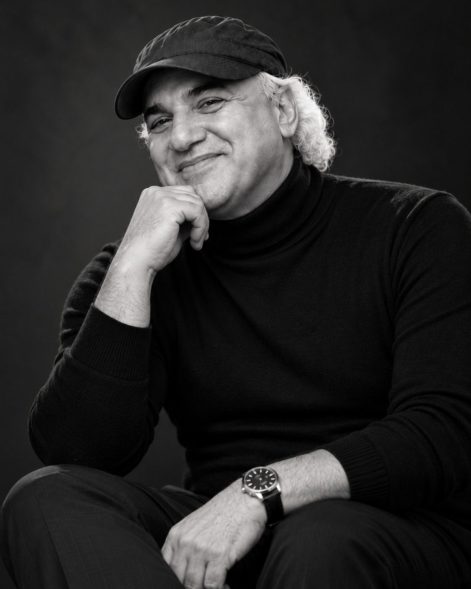

The record
Year by year.
Four decades of companies, brands and buildings, in order.

Timeline
- 1976
Arrives in America
At 17, from Israel, with $20 and hardly any English. Bus boy, cook, painter, warehouseman, shoe factory shipping clerk.
- 1978
Founds LJ Simone
At 19, he starts his own business. The LJ Simone story
- 1980
Steve Madden joins LJ Simone
A young salesman who would later found his own shoe company spends about nine years at LJ Simone.
- 1985
L. J. SIMONE trademark registered
Ladies' handbags and shoes, registered to Admos Shoe Corp., New York.
- 1987
Profiled in The Dynamos
Brett Kingstone's book reports over 250 employees and over $20 million in sales in 1986. Read the profile
- 1993
LJ Simone acquired by Pentland Brands
He becomes President of Pentland USA. Pentland USA
- 1993 to 2007
Business and real estate
Various businesses, Series 7, 63 and 24 licenses, and a Real Estate Broker license.
- 1995
ShopRite site, Glen Cove
Develops a supermarket site in Glen Cove, New York. Real estate
- 2001
Sale to Ahold
Manages the sale to the Ahold group, owner of Stop & Shop, valued at about $26 million.
- 2007
Founds PLV Studio
Co founds Pour La Victoire with David Giordano; Kelsi Dagger follows as its sister brand. PLV Studio
- 2011
VMG Partners invests in PLV Studio
The first private equity investment in the company.
- 2012
Modern Vice launches
A made to order shoe brand, made in New York City. PLV Studio also appoints its first European distributor.
- 2012 to 2014
TAG, Inc.
Investor and director, home of Modern Vice. Modern Vice
- 2013
Cameron Diaz joins Pour La Victoire
The actress takes a stake in PLV Studio and becomes artistic director.
- 2014
VMG Partners and Keep Healthy
VMG Partners acquires a majority interest in PLV Studio. The KEEP HEALTHY trademark is filed. Keep Healthy
- Since 2015
Consultant to Modern Vice
Advising the brand made in New York City.
- 2022
Modern Vice at the Grammys
Lenny Kravitz wears custom Modern Vice boots on the red carpet.
- Today
Brooklyn factory and rare coins
Working in his Brooklyn shoe factory and running a rare coin business. Today
Quick answers
Questions, answered.
When did Jay Adoni start his first company?
Jay Adoni founded LJ Simone in 1978, two years after arriving in the United States at 17.
What is Jay Adoni doing today?
Today Jay Adoni works in his shoe factory in Brooklyn, New York, and runs a rare coin business.